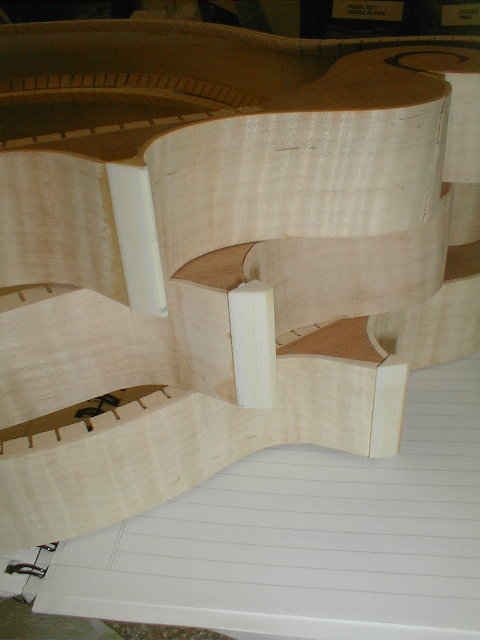
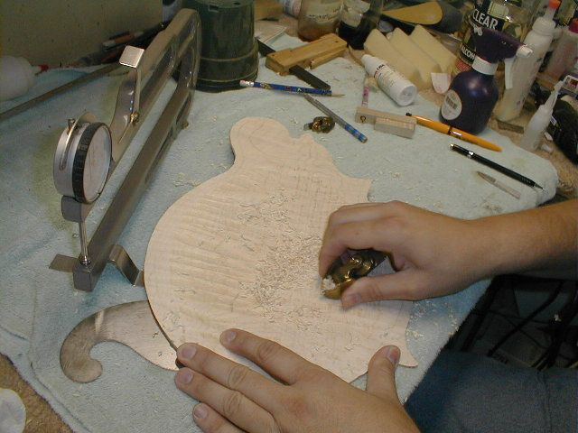

←
12345678910111213
→
Fitting linings, Corner caps, hollowing the plates, cutting the dovetail, gluing on the back.
- 14) Installing the kerfed lining is tricky. Unlike guitars where you can clamp it in place with clothes pins, the 45 degree angle on the inside surface makes it impossible to clamp. I found pins, placed in the saw kerfs works well.
- 14b) It's time to start thinking about finish now. I'm mixing my own shellac using a high grade of shellac flake and pure grain alcohol (remember this stuff Sam?!
- 15)I use a large board with 80 grit sandpaper to level the sides/kerfed lining/and blocks. Once I finish with this side, I'll flip it over and do the other.
- 16) The points are made from ivoroid. Pieces are cut from 1/4" thick stock, the points are trimmed on the bandsaw, then cyanoacrylate glue is used to attach them.
- 
- 17) Here are several rims with the ivoroid point attached, "in the rough".
- 18) I put a sanding drum in the drill press to shape the points. Once they are shaped, I sand them flush with the top and back surfaces.
- 19) I put the rim back in the form, mark the center line, then use a template to lay out the dovetail.
- 20) Here are a couple of rims with the dovetail cut.
- 21) Now, the outside of the back, which has been rough shaped on the carving machine, must be smoothed. I use violin makers finger planes (shown in the picture), scrapers, and sandpaper. The back in this series of photos is Gary Hedricks. It is a one piece back with spectacular figure.
- 22) After smoothing the outside of the back, I mark the bottom of the "recurve" area using a pencil in a home-made gauge. The bottom of the recurve is 5/8" in from the edge. I'll use my calipers to take measurements here to assure proper thickness before carving the inside contour.
- 23) Before carving the inside of the back, I want to know exactly where the kerfed lining will intersect the back, so I install two small locating pins. These will make small indentions in the back (at the tailblock and center of the scroll) allowing me to put the back on in the exact same place each time, and will prevent it from slipping when the clamps are put on during gluing.
- 24) I'm holding the back on and marking the location of the kerfed lining with a pencil. You want to be careful not to carve past the line or you will end up with a gap between the back and the lining.
- 25) Now, it's on to the carving machine. A pattern for the inside of the back is installed on the right and a fixture to hold the back on the left. I'll make a cut that will leave about 2mm of extra wood inside the back.
- 26) You can see where I've cut with the carving machine. Now to the fingerplanes.
- 
- 27) Fingerplanes and scrapers are used to achieve final thickness, then a good sanding. My calipers are on the top left of the picture. This takes a couple of hours to finish from this point.
- 28) After final graduation, the back is glued on Gary's mandolin. The reason for gluing the back on first is so you can clean up any glue squeeze out before putting the top on. If there is any excess glue under the top, it's never seen. But, usually the squeeze out is minimal.
←
12345678910111213
→
© Lynn Dudenbostel, 2002.